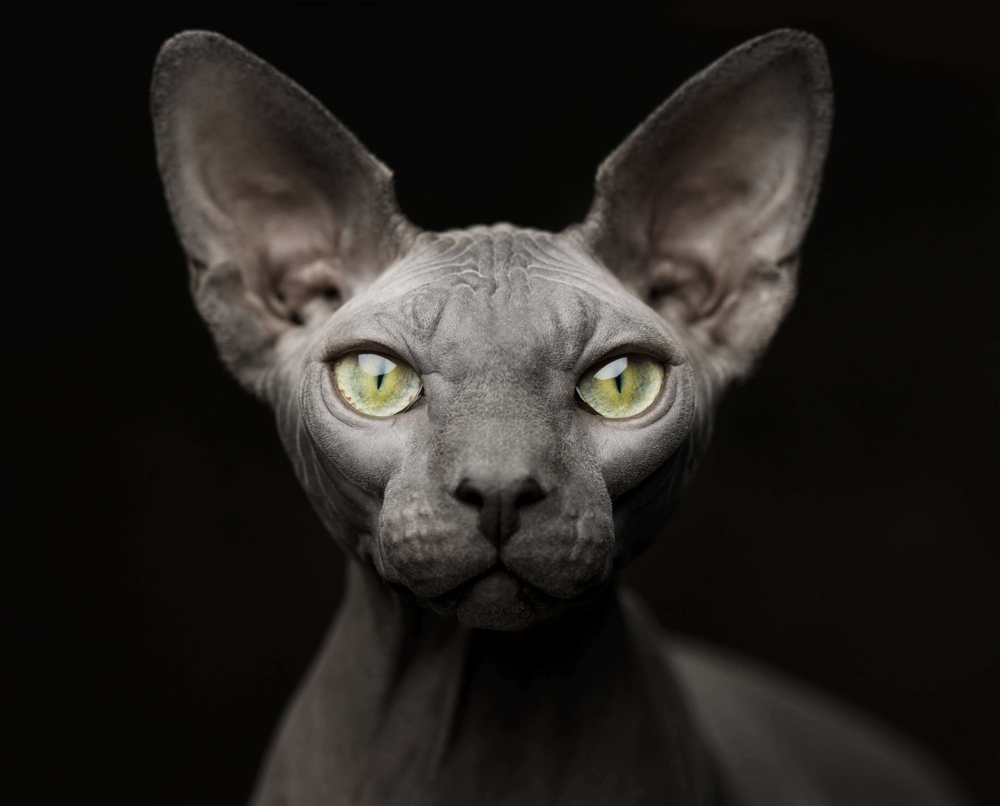
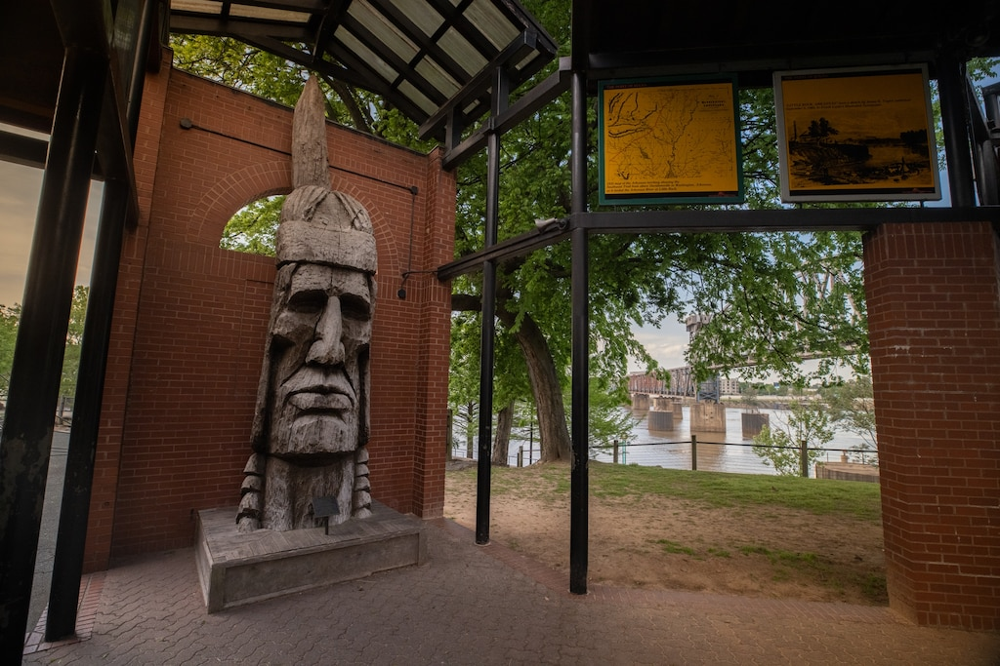

Magazine
What are the animals thinking?
Read

Magazine From the editor
Why we set out to uncover the mysteries of animal minds
Read

Magazine From the editor
How these two photographers got inside the minds of animals
Read
Today's Picks
History & Culture
Like a dystopian novel: Puerto Rico still mourns, five years after Maria
Animals

Wildlife Watch
The high-stakes quest to save a behemoth, croaking fish

History & Culture
The warriors of this West African kingdom were formidable-and female

Travel
How Little Rock is reckoning with the Trail of Tears
Environment
Marine heat waves are rising. What are these blobs of hot water?

History & Culture
Ghana's jockeys cherish their horses-and their traditions